Módulo 3 ggplot2 - parte II
Neste módulo, usaremos estes pacotes. Confira se você já os tem instalados:
library(tidyverse)
library(janitor)
library(readxl)
# interface com series temporais do banco central:
library(rbcb) # install.packages('rbcb')
# jaja explico :)
library(ggrepel) # install.packages('ggrepel')Usaremos o dataset do índice de felicidade salvo anteriormente:
# importar dataset
df_feliz <- read_rds("dados_felicidade_2017.rds")
head(df_feliz)## # A tibble: 6 x 12
## country year life_ladder log_gdp_per_cap… social_support
## <chr> <int> <dbl> <dbl> <dbl>
## 1 Afghan… 2017 2.66 7.46 0.491
## 2 Albania 2017 4.64 9.37 0.638
## 3 Algeria 2017 5.25 9.54 0.807
## 4 Argent… 2017 6.04 9.84 0.907
## 5 Armenia 2017 4.29 9.03 0.698
## 6 Austra… 2017 7.26 10.7 0.950
## # ... with 7 more variables: healthy_life_expectancy_at_birth <dbl>,
## # freedom_to_make_life_choices <dbl>, perceptions_of_corruption <dbl>,
## # positive_affect <dbl>, negative_affect <dbl>, gini <dbl>,
## # continent <chr>3.1 Gráficos de relacionamentos entre variáveis contínuas: scatter plot
Scatterplot, ou gráfico de pontos, é um tipo de visualização especialmente útil para observar se existe uma relação entre duas variáveis contínuas (numéricas), de que tipo ela é e se existem indivíduos que são fogem do comportamento padrão da maioria dos pontos.
Observer o nosso dataset do índice de felicidade. Existem várias combinações de variáveis que poderíamos olhar. Por exemplo, qual será a relação entre PIB per capita e expectativa de vida saudável?
df_feliz %>%
ggplot(aes(x = log_gdp_per_capita,
y = healthy_life_expectancy_at_birth)) +
geom_point()## Warning: Removed 7 rows containing missing values (geom_point).
Apenas com esse simples gráfico, aprendemos algumas informações sobre o dataset:
* Conforme o esperado, existe uma correlação positiva entre as variáveis: quanto maior o PIB per capita do país, maior a expectativa de sua população.
* Contudo, existem alguns pontos que fogem dessa relação, como os que possuem log PIB per capita de 8,5 mas expectativa de vida em torno de apenas 45 anos.
Gráficos de pontos funcionam muito bem em conjunto com geom_smooth(). Observe como os comentários que fizemos sobre as propriedades dessas duas variáveis ficam ainda mais evidentes após adicionar a camada geom_smooth():
df_feliz %>%
ggplot(aes(x = log_gdp_per_capita,
y = healthy_life_expectancy_at_birth)) +
geom_point() +
# adicionar reta de ajuste de um modelo linear
geom_smooth(method = "lm")## Warning: Removed 7 rows containing non-finite values (stat_smooth).## Warning: Removed 7 rows containing missing values (geom_point).
A função geom_point() depende apenas de dois elementos obrigatórios para funcionar: x e y. Contudo, como já vimos, podemos definir opcionalmente outras propriedades visuais dos pontos, seja com valores absolutos ou mapeando variáveis a eles. Observe o exemplo abaixo:
df_feliz %>%
ggplot(aes(x = log_gdp_per_capita,
y = healthy_life_expectancy_at_birth)) +
geom_point(aes(color = continent))## Warning: Removed 7 rows containing missing values (geom_point).
Ao acrescentar o elemento de cor, aprendemos que praticamente todos os países no quadrante de baixo PIB per capita e expectativa de vida são africanos.
Em algumas situações, faz mais sentido usar facets para separar pontos de acordo com uma variável categórica:
df_feliz %>%
ggplot(aes(x = log_gdp_per_capita,
y = healthy_life_expectancy_at_birth)) +
geom_point() +
facet_wrap(~ continent)## Warning: Removed 7 rows containing missing values (geom_point).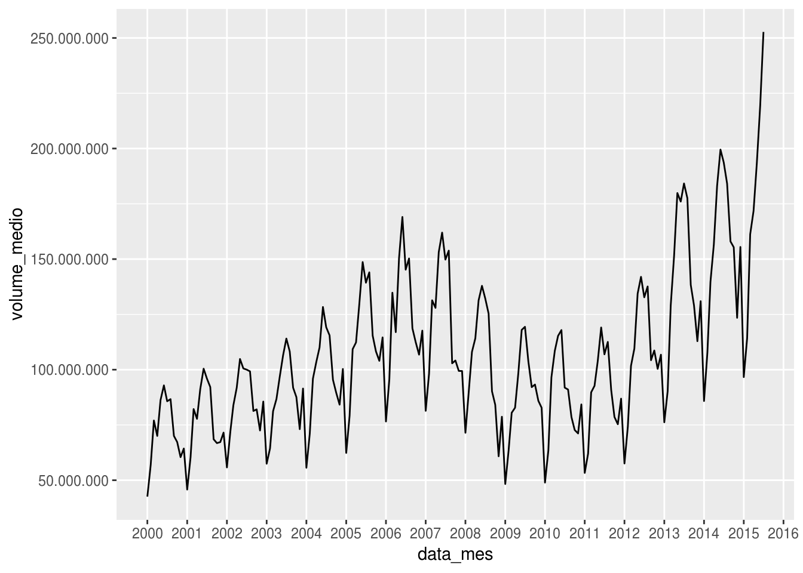
Referências:
geom_point()
3.2 Gráficos de barras ou colunas
Gráficos de barras ou colunas são uma ótima maneira de resumir um conjunto de dados, principalmente quando o objeto da análise é uma variável categórica.
Existem duas principais maneiras de criar um gráfico de barras no ggplot2: geom_bar() e geom_col(). geom_bar representa a altura de cada barra proporcional ao número de casos em cada grupo da variável categórica. Caso se deseja representar a altura das barras de acordo com alguma variável numérica presente no dataset. Assim, geom_bar() precisa apenas da aesthetic x, enquanto geom_col() precisa das aesthetics x e y, onde y é a variável numérica a qual a altura das barras representará, proporcionalmente.
Por exemplo, uma boa maneira de mostrar quantos países de cada continente estão presentes no nosso dataset é por meio de um gráfico de barras:
df_feliz %>%
ggplot(aes(x = continent)) +
geom_bar()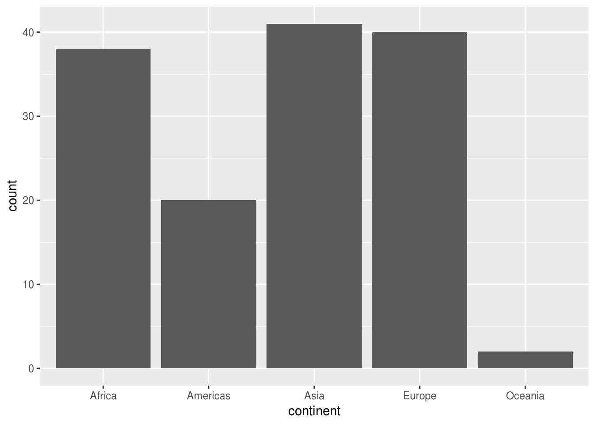
É possível fazer exatamente o mesmo gráfico acima com geom_col() sendo apenas necessário transformar os dados antes:
# agrupar os dados e contar a quantidade de países por continente
df_feliz %>%
group_by(continent) %>%
summarise(qtd_paises = n()) %>%
ggplot(aes(x = continent, y = qtd_paises)) +
geom_col()
Diferentemente de geom_point(), a aesthetic color das barras define apenas a cor das bordas. Para mudar a cor das barras, deve-se alterar o parâmetro fill:
df_feliz %>%
group_by(continent) %>%
summarise(qtd_paises = n()) %>%
ggplot(aes(x = continent, y = qtd_paises)) +
geom_col(color = "red", fill = "gray70")
No exemplo abaixo, usamos geom_col() para plotar os países com os 10 maiores índices de felicidades, com as barras coloridas pelo continente, mapeando essa variável na aesthetic fill:
df_feliz %>%
# selecionar o top 10 em indice de felicidade
top_n(10, life_ladder) %>%
ggplot(aes(x = country, y = life_ladder)) +
geom_col(aes(fill = continent))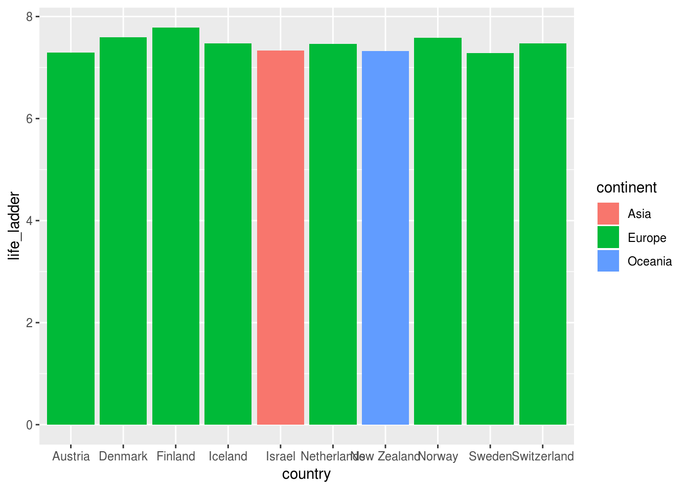
3.2.1 Invertendo eixos
No exemplo acima, os nomes dos países se sobrepuseram devido ao seu tamanho. Nessa e em outra situações, é desejável inverter os eixos do gráfico, o que é feito com a função coord_flip():
df_feliz %>%
# selecionar o top 10 em indice de felicidade
top_n(10, life_ladder) %>%
ggplot(aes(x = country, y = life_ladder)) +
geom_col(aes(fill = continent)) +
# inverter eixos
coord_flip()
3.2.2 Como mudar a ordem das barras
Uma tarefa muito comum ao fazer gráfico de barras é mudar a ordem das barras. Por padrão, o ggplot2 mantém a ordem dos leveis da variável, que é a alfabética (em casos onde ela não foi definida manualmente). É possível, no entanto, mudar a ordem das barras de forma que ela siga a mesma da variável contínua representada no gráfico ou até mesmo de uma outra presente no dataset.
Vamos refazer o gráfico de quantidade de países por continente, dessa vez reordenado as barras:
# agrupar os dados e contar a quantidade de países por continente
df_feliz %>%
group_by(continent) %>%
summarise(qtd_paises = n()) %>%
# transformar variavel continent, mudando a ordem de seus leveis
mutate(continent = reorder(continent, qtd_paises)) %>%
ggplot(aes(x = continent, y = qtd_paises)) +
geom_col()
Para inverter a ordem, isto é, plotar as barras em ordem decrescente, basta apenas escrever um sinal de menos (-) antes da variável contínua:
# agrupar os dados e contar a quantidade de países por continente
df_feliz %>%
group_by(continent) %>%
summarise(qtd_paises = n()) %>%
# transformar variavel continent, mudando a ordem de seus leveis
mutate(continent = reorder(continent, -qtd_paises)) %>%
ggplot(aes(x = continent, y = qtd_paises)) +
geom_col()
Referências:
geom_bar() e geom_col()
3.3 Gráficos de distribuições
Existe uma família de gráficos dedicada a representar visualmente a distribuição de uma determinada variável contínua, com o objetivo de observar aspectos como média da distribuição, desvio padrão da média, presença de outliers, formato da distribuição, etc.
3.3.1 Histogramas
Histograma é um método de sumarizar uma variável contínua a dividindo em segmentos ou intervalos (bins, em inglês) e contando quantas observações estão presentes em cada intervalo. O que difere o histograma de um gráfico de barras é o tipo da variável, pois o último lida com variáveis categóricas ou discretas, sendo os intervalos definidos pelos próprios valores que a variável assume, sem a necessidade de dividir em intervalos.
No ggplot2, uma camada contendo um histograma é criada usando a função geom_histogram(), que só precisa de um elemento aesthetic: a variável do eixo x, que é aquela que se deseja estudar a distribuição.
No nosso dataset de exemplo, o histograma pode ser usado para analisar a distribuição da expectativa de vida dos países:
df_feliz %>%
ggplot(aes(x = healthy_life_expectancy_at_birth)) +
geom_histogram()## `stat_bin()` using `bins = 30`. Pick better value with `binwidth`.
A função geom_histogram(), por padrão, “quebra” a variável em 30 intervalos. É possível mudar esse comportamento especificando o argumento bins:
# reduzindo o numero de intervalos
df_feliz %>%
ggplot(aes(x = healthy_life_expectancy_at_birth)) +
geom_histogram(bins = 10)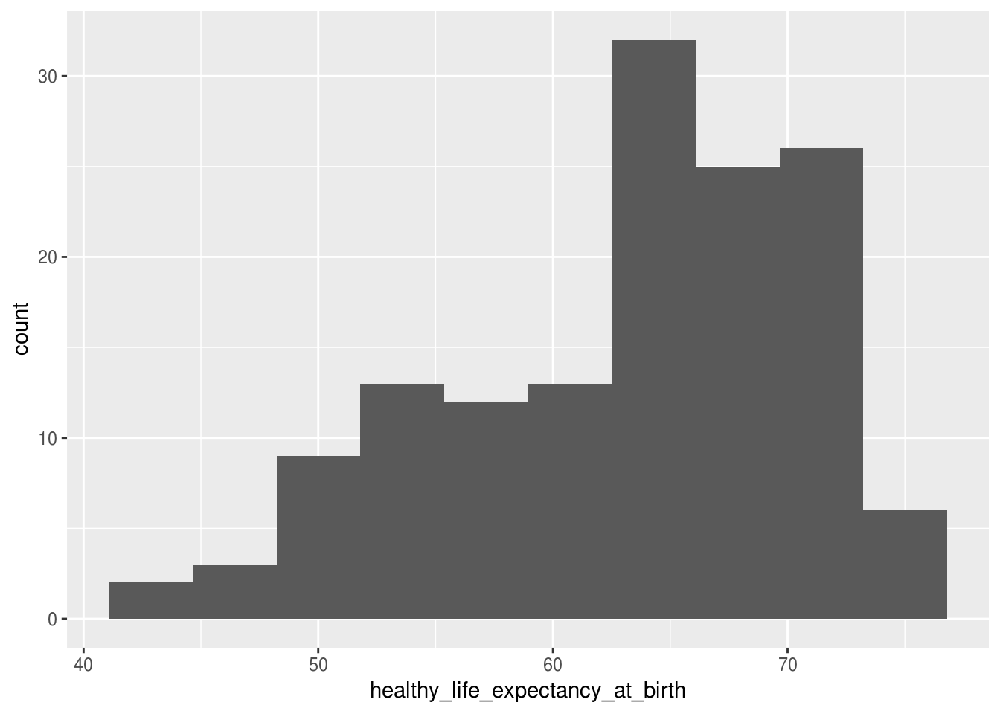
# aumentando o número de intervalos
df_feliz %>%
ggplot(aes(x = healthy_life_expectancy_at_birth)) +
geom_histogram(bins = 40)
Outra maneira de redefinir os intervalos de um histograma é mudando o argumento binwidth, que controla a largura dos intervalos. Não é possível definir os argumentos bins e binwidth de uma só vez; ou um ou o outro.
df_feliz %>%
ggplot(aes(x = healthy_life_expectancy_at_birth)) +
geom_histogram(binwidth = 5)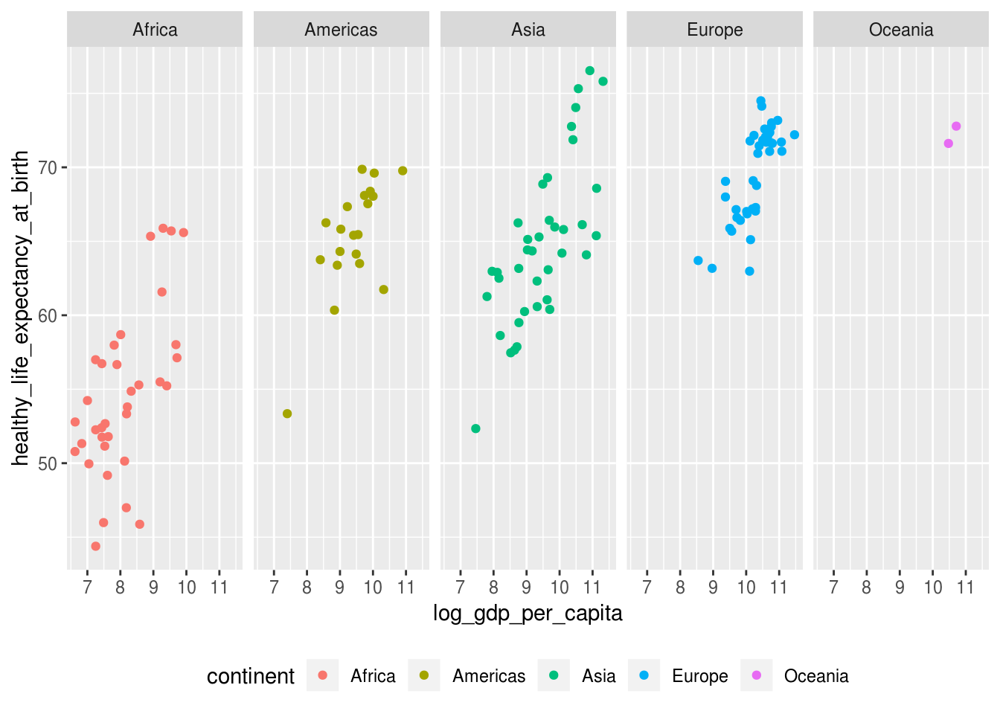
No histograma acima, ao definir a largura dos intervalos como 5, o histograma criou intervalos usando como centros os números 45, 50, 55, etc. Portanto, os intervalos são [42,5 - 47,5), [47,5 - 52,5), etc.
É possível també definir os limites dos intervalos. Por exemplo, caso você deseje que os intervalos comecem com números que terminem em 5, deve-se alterar o argumento boundary:
df_feliz %>%
ggplot(aes(x = healthy_life_expectancy_at_birth)) +
geom_histogram(binwidth = 5, boundary = 5)
Assim, conseguimos criar uma visualização que mostra que a grande maioria dos países possui uma expectativa de vida maior que 60 anos, e que alguns poucos países possuem uma expectativa de vida menor que 50 anos e maior que 75.
Como você já deve ter imaginado, é possível mudar aspectos visuais do histograma alterando suas aesthetics, como mudar a cor do histograma por valores atributos ou mapear alguma variável à cor do histograma. Veja que a cor de um histograma é definida pela propriedade fill, pois color altera apenas a cor das bordas das barras:
df_feliz %>%
ggplot(aes(x = healthy_life_expectancy_at_birth)) +
geom_histogram(binwidth = 5, boundary = 5,
color = "red", fill = "green", alpha = 0.5)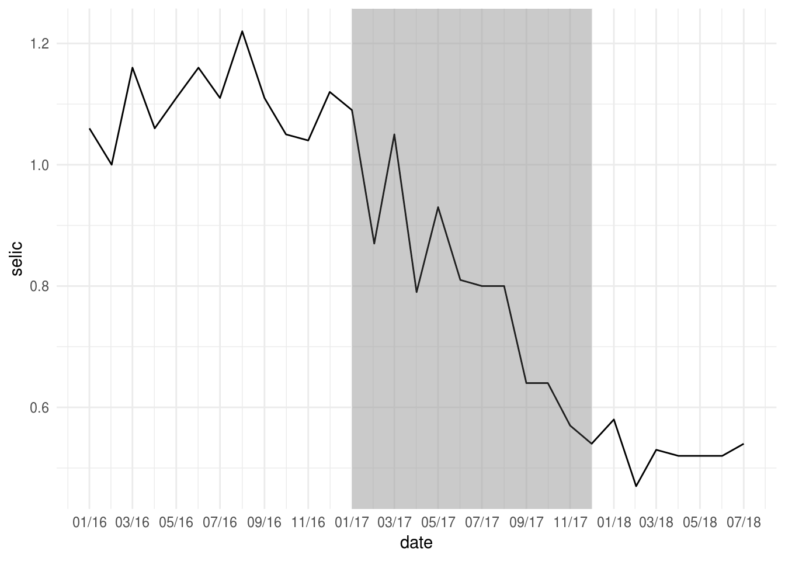
df_feliz %>%
ggplot(aes(x = healthy_life_expectancy_at_birth)) +
geom_histogram(binwidth = 5, boundary = 5, aes(fill = continent))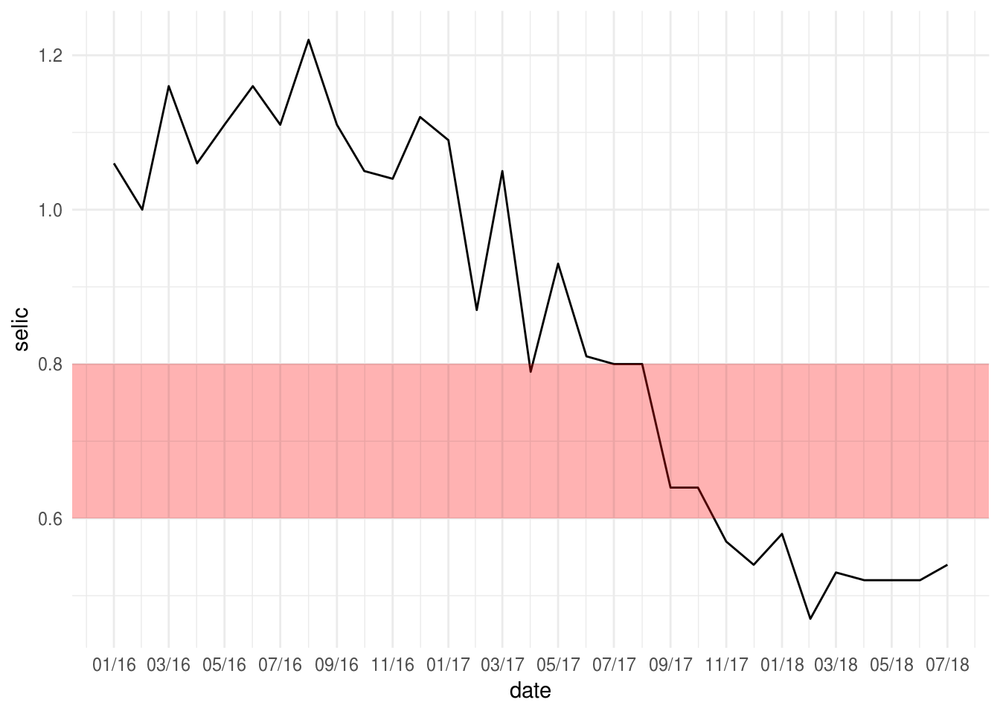
Histogramas agrupados, como o acima, não são muito bons para visualizar as diferenças entre os grupos. Ness caso, uma melhor alternativa é usar facets:
df_feliz %>%
ggplot(aes(x = healthy_life_expectancy_at_birth)) +
geom_histogram(binwidth = 5, boundary = 5) +
facet_wrap(~ continent, ncol = 1)
Contudo, existem maneiras melhores de visualizar a distribuição de uma variável continua segmentada por diferentes grupos, como o que tentamos fazer acima. Exemplos são os gráficos dos próximos tópicos.
Referências: geom_histogram()
3.3.2 Gráfico de densidade
Ao trabalhar com uma variável contínua, uma alternativa a dividir os dados em intervalos e fazer um histograma é calcular a densidade de kernel estimada para a distribuição da variável. Parece complicado, mas a função geom_density() faz todo o trabalho por nós:
df_feliz %>%
ggplot(aes(x = healthy_life_expectancy_at_birth)) +
geom_density()
Semelhantemente a um histograma, as aesthetics color e fill podem ser definidas, sendo a primeira para a borda e a segunda para o corpo da curva de densidade:
df_feliz %>%
ggplot(aes(x = healthy_life_expectancy_at_birth)) +
geom_density(color = "red", fill = "green")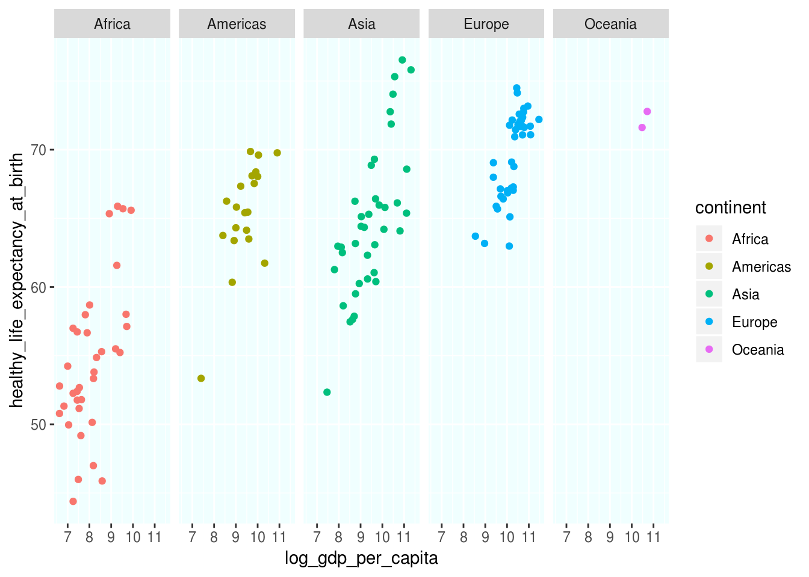
O gráfico de densidade, por si só, não oferece muito mais em termos de interpretabilidade que um histograma. Seu grande triunfo está em observar como se comporta a distribuição da variável contínua definida na aesthetic x em diferentes grupos de uma variável categórica definida na aesthetic fill:
df_feliz %>%
# remover oceania porque so tem dois paises
filter(continent != "Oceania") %>%
ggplot(aes(x = healthy_life_expectancy_at_birth)) +
geom_density(aes(fill = continent),
# adicionar transparencia
alpha = 0.5
)
A partir do gráfico de densidade acima, aprendemos algumas informações sobre nossos dados, como:
* Não só a média da expectativa de vida da África é bem menor que a dos demais continentes, mas poucos países apresentam níveis dessa variável semelhantes a Europa, Asia e Americas.
* Nenhuma das distribuições da variáveis nos quatro continentes aparenta ser normal: a da Europa, por exemplo, apresenta um formato bimodal. Essa pode ser uma informação importante para suas análises.
Referências:
Distribuição normal
geom_density()
3.3.3 Boxplot
Boxplot, ou diagramas de caixa, é uma outra maneira de estudar o comportamento de uma variável contínua segmentada por diferentes grupos de uma variável categórica. A função geom_boxplot() precisa de duas aesthetics: x, a variavel categórica, e y, a variável contínua:
df_feliz %>%
# remover oceania porque so tem dois paises
filter(continent != "Oceania") %>%
ggplot(aes(x = continent, y = healthy_life_expectancy_at_birth)) +
geom_boxplot()
Um boxplot tenta resumir uma variável numérica usando 5 números: a mediana (linha central da caixa), o primeiro quartil ou 25% percentil (linha inferior), o terceiro quartil ou 75% percentil (linha superior) e uma margem definida pelos intervalos interquartis multiplicados por um fator, que por padrão é 1,58. Ou seja: \(1.58 \times IQR\). Pontos fora desses limites seriam considerados outliers ou anomalias para aquele grupo.
Em determinadas situações, é desejável inverter os eixos, transformando o gráfico em horizontal. Isso é possível por meio da função coord_flip()
df_feliz %>%
filter(continent != "Oceania") %>%
ggplot(aes(x = continent, y = healthy_life_expectancy_at_birth)) +
geom_boxplot() +
coord_flip()
Também é possível criar uma subdivisão com boxplots usando o argumento fill. Por exemplo:
# criar nova variavel que indica se um país possui um
# indice de felicidade maior que 6
df_feliz %>%
filter(continent != "Oceania") %>%
mutate(indice_felicidade = if_else(life_ladder > 6,
"acima de 6",
"abaixo")) %>%
ggplot(aes(x = continent, y = healthy_life_expectancy_at_birth)) +
geom_boxplot(aes(fill = indice_felicidade))
Assim, com o gráfico acima descobrimos que países dentro de um mesmo continente que possuem índice de felicidade acima 6 possuem também maior expectativa de vida, o que era esperado. Nota-se que a caixa dos países da África com índice de felicidade acima de 6 ficou achatada porque só tem um país.
Referências: geom_boxplot()
3.3.4 Jitter
Uma maneira de incrementar um boxplot é plotar também todos os pontos, e não apenas os 5 que o boxplot representa. Isso pode ser feito com a função geom_jitter(), que é uma variação de geom_point() que adiciona uma pequena quantidade de variação aleatória na posição dos pontos, o que pode ser útil ao plotar pontos que sobreporiam devido a grande quantidade de indíviduos presentes em um mesmo intervalo de pontos.
df_feliz %>%
# remover oceania porque so tem dois paises
filter(continent != "Oceania") %>%
ggplot(aes(x = continent, y = healthy_life_expectancy_at_birth)) +
geom_boxplot() +
geom_jitter(color = "red")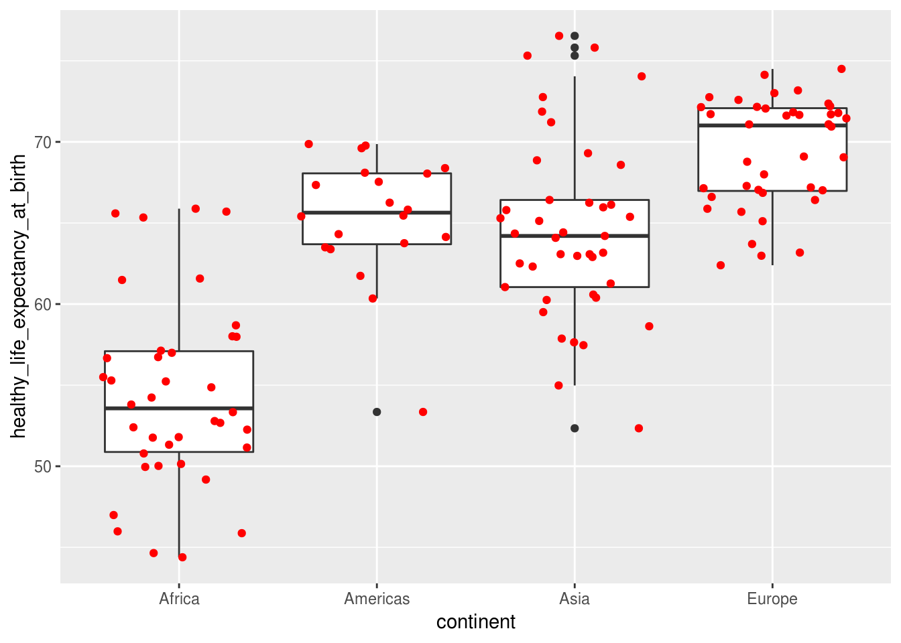
Uma curiosidade interessante do ggplot2 é que as camadas são criadas na ordem que são definidas. Observe a diferença do gráfico acima para o criado abaixo, onde a ordem das camadas de boxplot e jitter foi invertida:
df_feliz %>%
# remover oceania porque so tem dois paises
filter(continent != "Oceania") %>%
ggplot(aes(x = continent, y = healthy_life_expectancy_at_birth)) +
geom_jitter(color = "red") +
geom_boxplot() 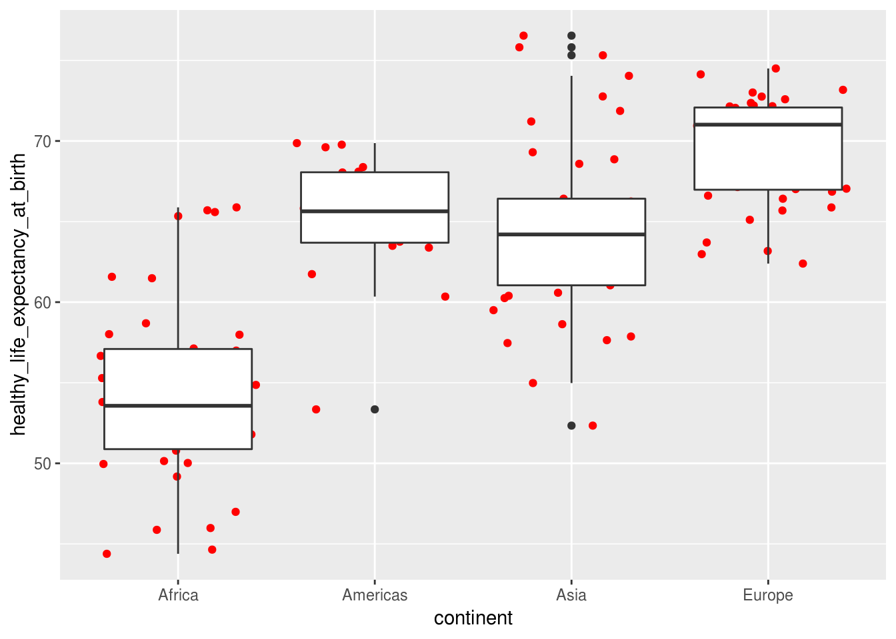
Referências: geom_jitter()
3.4 Gráficos de séries temporais (linhas)
Série temporal é definida como uma variável contínua mensurada em intervalos regulares de tempo. A melhor representação visual para dados desse tipo são gráficos de linha, que são úteis para mostrar o comportamento de uma variável ao longo do tempo.
Como exemplo para gráficos de linha, vamos plotar a evolução de dois importantes indicadores econômicos brasileiros: a taxa SELIC e o índice IPCA, ambos mensalizados. Para obter esses indicadores, usamos o pacote rbcb:
# Importar para o R dados das series.
lista_datasets <- rbcb::get_series(code = c(ipca = 433, selic = 4390))
# O objeto retornado é uma lista de dois dataframes:
str(lista_datasets)## List of 2
## $ ipca :Classes 'tbl_df', 'tbl' and 'data.frame': 463 obs. of 2 variables:
## ..$ date: Date[1:463], format: "1980-01-01" ...
## ..$ ipca: num [1:463] 6.62 4.62 6.04 5.29 5.7 5.31 5.55 4.95 4.23 9.48 ...
## $ selic:Classes 'tbl_df', 'tbl' and 'data.frame': 387 obs. of 2 variables:
## ..$ date : Date[1:387], format: "1986-06-01" ...
## ..$ selic: num [1:387] 1.27 1.95 2.57 2.94 1.96 ...# Voce pode acessar cada dataframe usando a sintaxe NOME_DA_LISTA$NOME_DO_OBJETO:
str(lista_datasets$selic)## Classes 'tbl_df', 'tbl' and 'data.frame': 387 obs. of 2 variables:
## $ date : Date, format: "1986-06-01" "1986-07-01" ...
## $ selic: num 1.27 1.95 2.57 2.94 1.96 ...# Vamos então criar apenas um dataset que corresponde a junção dos dois dataframes
df_st <- left_join(lista_datasets$ipca,
lista_datasets$selic,
by = "date")
# conferindo o novo dataframe criado
head(df_st)## # A tibble: 6 x 3
## date ipca selic
## <date> <dbl> <dbl>
## 1 1980-01-01 6.62 NA
## 2 1980-02-01 4.62 NA
## 3 1980-03-01 6.04 NA
## 4 1980-04-01 5.29 NA
## 5 1980-05-01 5.7 NA
## 6 1980-06-01 5.31 NATemos uma coluna de data (date), cuja classe é Date e será usada como eixo x no gráfico de séries temporais:
# grafico da taxa selic
ggplot(df_st, aes(x = date, y = ipca)) +
geom_line()
Adicionar geom_smooth(method = "loess") ajuda a distinguir movimentos de tendência na série temporal:
df_st %>%
filter(date >= as.Date("2008-01-01")) %>%
ggplot(aes(x = date, y = selic)) +
geom_line() +
geom_smooth(method = "loess", se = FALSE)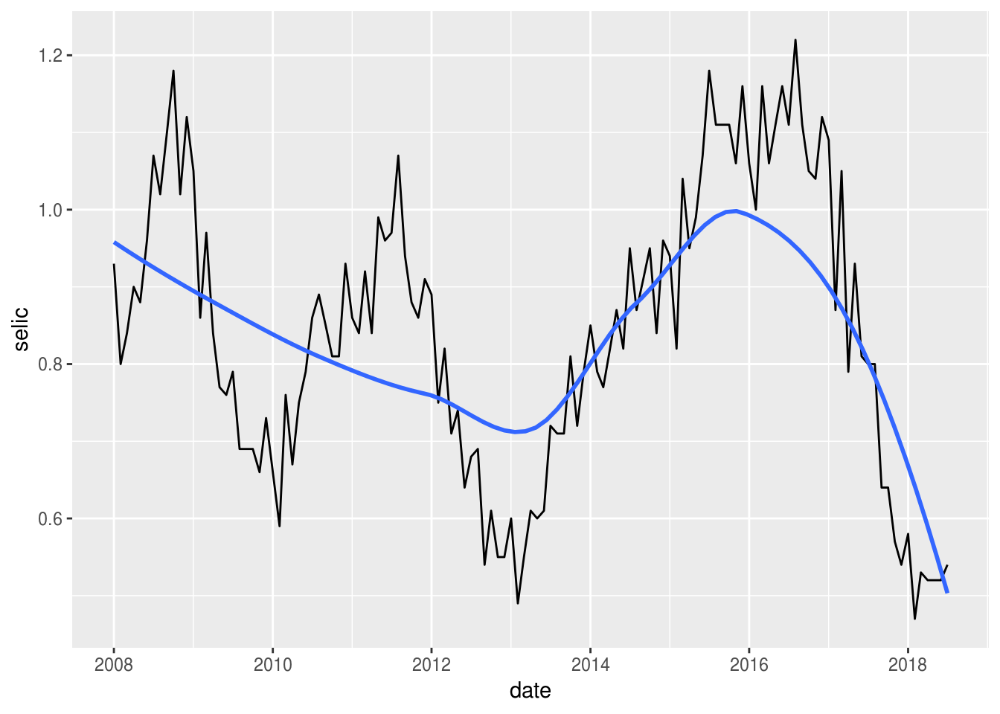
É possível incluir no gráfico mais de uma variável no eixo y. Uma das alternativas é simplesmente acrescentar mais uma camada geom_line() com a nova variável:
ggplot(df_st, aes(x = date, y = ipca)) +
geom_line() +
# adicionar mais uma camada de geom_line
geom_line(aes(y = selic), color = "blue")## Warning: Removed 77 rows containing missing values (geom_path).
No entanto, a melhor maneira de se fazer isso é converter os dados para o formato long (tidy):
df_st_tidy <- df_st %>%
gather(indicador, valor, ipca:selic) %>%
arrange(date)
head(df_st_tidy)## # A tibble: 6 x 3
## date indicador valor
## <date> <chr> <dbl>
## 1 1980-01-01 ipca 6.62
## 2 1980-01-01 selic NA
## 3 1980-02-01 ipca 4.62
## 4 1980-02-01 selic NA
## 5 1980-03-01 ipca 6.04
## 6 1980-03-01 selic NA# antes de proceder com o restante do exercicio, vamos salvar o dataset para
# o usar nos proximos modulos
write_rds(df_st_tidy, "series_ipca_selic.rds")Note que indicador é uma coluna categórica e valor, numérica. Portanto, a primeira será mapeada à aesthetic y e a segunda a color. Agora, a variável indicador é mapeada ao atributo color.
df_st_tidy %>%
ggplot(aes(x = date, y = valor, color = indicador)) +
geom_line()## Warning: Removed 77 rows containing missing values (geom_path).
Notou como o período antes de 1995 representava uma realidade muito diferente da atual? Vamos então filtrar os dados a partir desse ano.
df_st_pos_1995 <- df_st_tidy %>%
filter(date >= as.Date("1995-01-01"))
df_st_pos_1995 %>%
ggplot(aes(x = date, y = valor, color = indicador)) +
geom_line()
Referências: geom_line()
3.4.1 Personalizando a escala do eixo de datas
Observe o último gráfico. O ggplot2, internamente, “quebrou” o eixo x em intervalos de 5 anos. Esse aspecto do gráfico pode ser alterado usando a função scale_x_date, usando o argumento date_breaks:
ggplot(df_st_pos_1995, aes(x = date, y = valor, color = indicador)) +
geom_line() +
scale_x_date(date_breaks = "2 year")
Ao mudar o argumento date_breaks, o gráfico perdeu a representação de datas anterior, que antes só mostrava o ano. Para voltar ao formato anterior, pode-se alterar o formato das datas usando o argumento date_labels da mesma função:
ggplot(df_st_pos_1995, aes(x = date, y = valor, color = indicador)) +
geom_line() +
scale_x_date(date_breaks = "2 year",
date_labels = "%Y")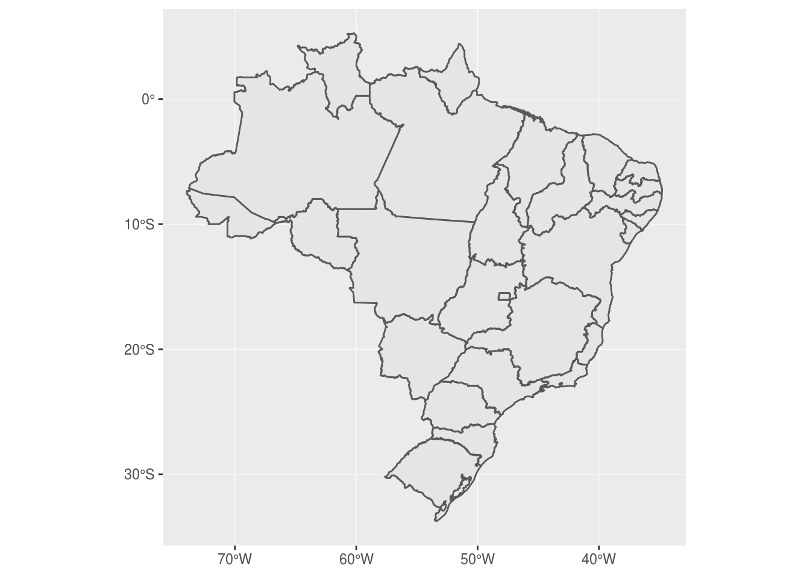
3.5 Mapas de calor
Até agora, estudamos gráficos para representar as relações entre:
* Uma variavél categórica com ou sem uma numérica (gráficos de barra)
* Duas numéricas (gráficos de pontos)
* Uma numérica (histogramas e boxplots)
* Uma numérica ao longo do tempo (gráficos de linhas)
Para representar uma relação um pouco mais complexa, a de duas variáveis categóricas e uma numérica, pode-se usar um mapa de calor.
Suponha que você deseja plotar a correlação entre todos os possíveis pares de correlação das variáveis de um dataset:
# calcular correlacao entre as variaveis numericas do dataset de felicidade
df_feliz_num <- df_feliz %>%
select(life_ladder, log_gdp_per_capita, social_support,
healthy_life_expectancy_at_birth, gini, perceptions_of_corruption) %>%
# removar NAs
na.omit()
# criar matriz de correlacao
matriz_correl <- cor(df_feliz_num)
# de uma olhada no objeto criado
# matriz_correl
# transformar para dataframe
matriz_correl <- as.data.frame(matriz_correl)
# conveter rownames para uma coluna
matriz_correl <- rownames_to_column(matriz_correl, "var1")
# converter dataframe para formato tidy
matriz_correl_tidy <- matriz_correl %>%
gather(var2, correlacao, -var1)
head(matriz_correl_tidy)## var1 var2 correlacao
## 1 life_ladder life_ladder 1.0000000
## 2 log_gdp_per_capita life_ladder 0.7549421
## 3 social_support life_ladder 0.7647823
## 4 healthy_life_expectancy_at_birth life_ladder 0.7304080
## 5 gini life_ladder -0.4581271
## 6 perceptions_of_corruption life_ladder -0.5000318Assim, no dataframe var1 e var2, temos duas variáveis categóricas (os pares de variáveis) e uma numérica (a correlação entre as duas variáveis).
A função do ggplot2 para criar um mapa de calor é geom_tile, que precisa de três aesthetics: os eixos x e y, que são as variáveis categóricas, e fill, que será a variável contínua que definirá a cor dos quadrados:
matriz_correl_tidy %>%
ggplot(aes(x = var1, y = var2, fill = correlacao)) +
geom_tile()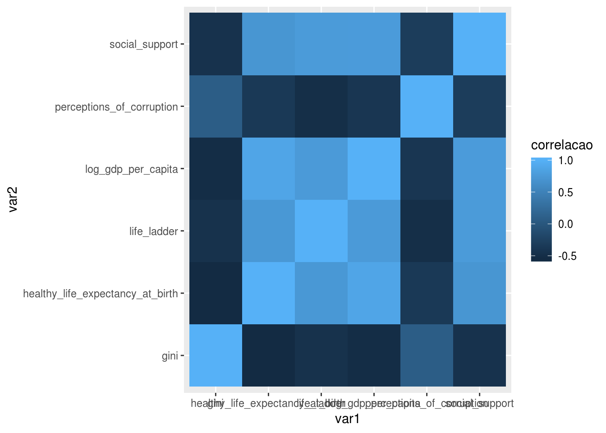
Devido ao tamanho dos nomes das variáveis, o eixo x ficou difícil de ler. Uma solução é mudar o ângulo dos nomes, isto é, colocá-los na vertical. A função theme(), que ainda será mostrada em detalhes neste módulo, possui um argumento para fazer isso:
matriz_correl_tidy %>%
ggplot(aes(x = var1, y = var2, fill = correlacao)) +
geom_tile() +
theme(axis.text.x = element_text(angle = 90))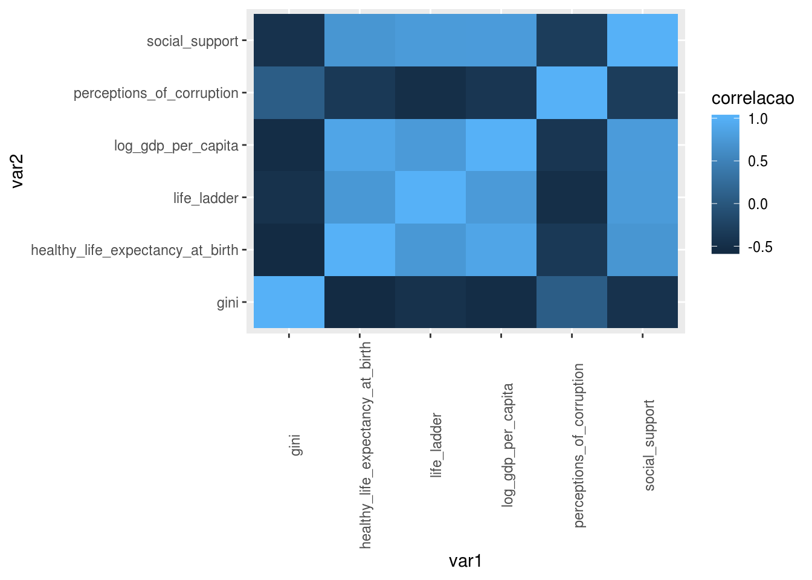
Caso você não tenha gostado da escala de cores em azul definida por padrão pelo ggplot2, é possível mudar usando a função scale_fill_distiller:
matriz_correl_tidy %>%
ggplot(aes(x = var1, y = var2, fill = correlacao)) +
geom_tile() +
scale_fill_distiller(
# alterar o tipo da escala. pode ser divergente, sequencial e categorica
type = "div",
# alterar a paleta. confira os possiveis valores na documentacao da funcao
palette = "RdBu",
# inverter a direcao
direction = 1
) +
theme(axis.text.x = element_text(angle = 90))
Referências:
geom_tile()
Material sobre funções da família scale, seção 9.3.
3.6 Texto
As funções geom_text() e geom_label() servem para acrescentar camadas de texto no gráfico. A única diferença entre as duas é que geom_label() desenha um retângulo no fundo do texto, possivelmente melhorando sua leitura. Ambas funções geom_text() dependem de três aesthetics: x e y, que correspondem às posições dos textos a serem plotados, e label, que é o texto a ser plotado.
No exemplo abaixo, não especificamos x e y em geom_text() porque a função herda as definidas na função ggplot():
# agrupar os dados e contar a quantidade de países por continente
df_feliz_agg <- df_feliz %>%
group_by(continent) %>%
summarise(qtd_paises = n())
df_feliz_agg## # A tibble: 5 x 2
## continent qtd_paises
## <chr> <int>
## 1 Africa 38
## 2 Americas 20
## 3 Asia 41
## 4 Europe 40
## 5 Oceania 2df_feliz_agg %>%
ggplot(aes(x = continent, y = qtd_paises)) +
geom_col() +
# adicionar camada de texto
geom_text(aes(label = qtd_paises))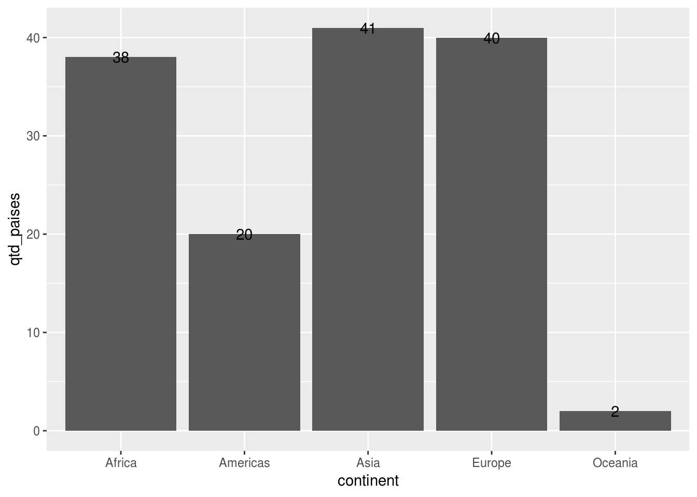
Observe a diferença de geom_label():
df_feliz_agg %>%
ggplot(aes(x = continent, y = qtd_paises)) +
geom_col() +
# adicionar camada de texto
geom_label(aes(label = qtd_paises))
É possível alterar a posição da camada de texto no gráfico alterando os argumentos vjust e hjust:
df_feliz_agg %>%
ggplot(aes(x = continent, y = qtd_paises)) +
geom_col() +
# adicionar camada de texto
geom_text(aes(label = qtd_paises),
# mudar posicao para mais baixo
vjust = 1,
# mudar posicao para mais a direita
hjust = -1,
# porque nao, alterar tambem a cor
color = "white"
)
Suponha que no primeiro gráfico de pontos mostrado no material, que mostra a relação entre PIB per capita e expectativa de vida, você deseja também acrescentar os nomes dos países:
df_feliz %>%
ggplot(aes(x = log_gdp_per_capita,
y = healthy_life_expectancy_at_birth)) +
geom_point() +
geom_text(aes(label = country))## Warning: Removed 7 rows containing missing values (geom_point).## Warning: Removed 7 rows containing missing values (geom_text).
Como era de se esperar, o gráfico ficou muito poluído. Vamos então reduzir os pontos que queremos mostrar os nomes dos respectivos países apenas aos países dos continentes americanos. A estrategia, então, consiste em criar um novo dataframe com esses países e mudar o argumento data em geom_text:
america <- df_feliz %>%
filter(continent == "Americas")
df_feliz %>%
ggplot(aes(x = log_gdp_per_capita,
y = healthy_life_expectancy_at_birth)) +
geom_point() +
geom_text(data = america, aes(label = country))## Warning: Removed 7 rows containing missing values (geom_point).
Melhorou, mas ainda assim ficou poluído. Uma boa solução para esse problema é o pacote ggrepel, que internamente calcula a melhor posição entre os pontos da camada de texto, seja geom_text() ou geom_label(), de forma que não haja conflito de posição entre pontos. A única alteração necessária é mudar geom_text para geom_text_repel:
df_feliz %>%
ggplot(aes(x = log_gdp_per_capita,
y = healthy_life_expectancy_at_birth)) +
geom_point() +
geom_text_repel(data = america, aes(label = country))## Warning: Removed 7 rows containing missing values (geom_point).
Outro gráfico mostrado anteriormente neste material que pode ser melhorado é o mapa de calor, acrescentando uma camada de texto que mostre o valor numérico da correlação entre as variáveis:
matriz_correl_tidy %>%
ggplot(aes(x = var1, y = var2, fill = correlacao)) +
geom_tile() +
scale_fill_distiller(
# alterar o tipo da escala. pode ser divergente, sequencial e categorica
type = "div",
# alterar a paleta. confira os possiveis valores na documentacao da funcao
palette = "RdBu",
# inverter a direcao
direction = 1
) +
theme(axis.text.x = element_text(angle = 90)) +
# adicionar camada de texto. é recomendável arredondar os numeros
geom_text(aes(label = round(correlacao, 2)))
geom_text() e geom_label() também podem ser usadas de maneira mais individualizada, ou seja, para adicionar anotações textuais em partes específicas do gráfico definidas pelo usuário. Observe o gráfico abaixo:
p2 <- df_st %>%
filter(date >= as.Date("2016-01-01")) %>%
ggplot(aes(x = date, y = selic)) +
geom_line()+
# quebrar o eixo x a cada 3 meses
scale_x_date(
date_breaks = "2 month",
# mostrar eixos no formato mes/ano
date_labels = "%m/%y"
) +
theme_minimal()
# grafico sem anotação:
p2
A taxa Selic caiu bastante em 2017. Que tal acrescentar esse comentário na área do gráfico? Isso pode ser definindo definindo manualmente as aesthetics de geom_text() ou geom_label():
p2 +
geom_label(
x = as.Date("2018-02-01"),
y = 1,
# Usamos o caracter especial \n para adicionar uma quebra de linha
label = "A taxa SELIC apresentou \ntendência de queda em 2017"
)
Referências:
geom_text() e geom_label()
3.7 Áreas ou faixas sombreadas
A função geom_rect pode ser usada para criar faixas sombreadas para destacar alguma parte específica do gráfico.
- No gráfico anterior, destacar o ano de 2017 no gráfico usando uma área sombreada:
p2 +
geom_rect(
xmin = as.Date("2017-01-01"),
xmax = as.Date("2017-12-01"),
ymin = -Inf,
ymax = Inf,
# deixar o retangulo mais transparente
alpha = 0.01
)
- Destacar uma faixa numérica relativa ao eixo y de interesse:
p2 +
geom_rect(
# a geom rect precisa de 4 aesthetics:
xmin = -Inf,
xmax = Inf,
ymin = 0.6,
ymax = 0.8,
# mudar cor do retangulo para vermelho
fill = "red",
# deixar a area sombreada mais transparente
alpha = 0.01
)
Outra maneira de criar faixas sombreadas, desta vez dependendo do valor de uma variável, é usando a função geom_ribbon(). No exemplo da série acima, suponha que queiramos destacar uma faixa em torno da taxa Selic:
p2 +
geom_ribbon(aes(ymin = -0.1 + selic, ymax = 0.1 + selic),
fill = "grey", alpha = 0.4)
3.8 Alterando aspectos visuais do gráfico com os temas
Um tema, no ggplot2, é definido como um conjunto de propriedades visuais, como fonte, cor do painel de fundo, posição da legenda, etc.
O tema padrão do ggplot2, caracterizado principalmente pelo fundo cinza, pode ser mudado para temas pré-definidos no pacote:
# grafico padrao a ser modificado
p <- df_feliz %>%
ggplot(aes(x = log_gdp_per_capita,
y = healthy_life_expectancy_at_birth)) +
geom_point(aes(color = continent)) +
facet_grid(~ continent)
p## Warning: Removed 7 rows containing missing values (geom_point).
# usar tema bw:
p + theme_bw()## Warning: Removed 7 rows containing missing values (geom_point).
# usar tema minimal:
p + theme_minimal()## Warning: Removed 7 rows containing missing values (geom_point).
# tema classico
p + theme_classic()## Warning: Removed 7 rows containing missing values (geom_point).
# tema dark
p + theme_dark()## Warning: Removed 7 rows containing missing values (geom_point).
Contudo, caso você não deseje usar o tema padrão mas mesmo assim quer alterar algumas propriedades visuais do gráfico, deve-se usar a função theme(). Esta é alista de todas as possíveis propriedades que podem ser alteradas:
args(theme)## function (line, rect, text, title, aspect.ratio, axis.title,
## axis.title.x, axis.title.x.top, axis.title.x.bottom, axis.title.y,
## axis.title.y.left, axis.title.y.right, axis.text, axis.text.x,
## axis.text.x.top, axis.text.x.bottom, axis.text.y, axis.text.y.left,
## axis.text.y.right, axis.ticks, axis.ticks.x, axis.ticks.x.top,
## axis.ticks.x.bottom, axis.ticks.y, axis.ticks.y.left, axis.ticks.y.right,
## axis.ticks.length, axis.line, axis.line.x, axis.line.x.top,
## axis.line.x.bottom, axis.line.y, axis.line.y.left, axis.line.y.right,
## legend.background, legend.margin, legend.spacing, legend.spacing.x,
## legend.spacing.y, legend.key, legend.key.size, legend.key.height,
## legend.key.width, legend.text, legend.text.align, legend.title,
## legend.title.align, legend.position, legend.direction, legend.justification,
## legend.box, legend.box.just, legend.box.margin, legend.box.background,
## legend.box.spacing, panel.background, panel.border, panel.spacing,
## panel.spacing.x, panel.spacing.y, panel.grid, panel.grid.major,
## panel.grid.minor, panel.grid.major.x, panel.grid.major.y,
## panel.grid.minor.x, panel.grid.minor.y, panel.ontop, plot.background,
## plot.title, plot.subtitle, plot.caption, plot.tag, plot.tag.position,
## plot.margin, strip.background, strip.background.x, strip.background.y,
## strip.placement, strip.text, strip.text.x, strip.text.y,
## strip.switch.pad.grid, strip.switch.pad.wrap, ..., complete = FALSE,
## validate = TRUE)
## NULLComo você percebeu, a lista é imensa. Por isso, vamos nos restringir neste material a alguns exemplos do que pode ser feito:
- Alterar a posição da legenda:
p +
theme(legend.position = "bottom")## Warning: Removed 7 rows containing missing values (geom_point).
- Remover os minor grids de um eixo:
p +
# remover minor grids do eixo x
theme(panel.grid.minor.y = element_blank())## Warning: Removed 7 rows containing missing values (geom_point).
- Mudar cor de fundo:
p +
theme(panel.background = element_rect(fill = "azure"))## Warning: Removed 7 rows containing missing values (geom_point).
Referências:
Confira todos os temas pré-definidos do ggplot2
theme()
Uma das grandes vantagens do ggplot2 é que basicamente tudo no gráfico é customizável. A função theme é usada para modificar componentes individuais de um tema
3.9 Títulos
Os títulos de todos os elementos de um gráfico, como os dos eixos, das legendas, do próprio título do gráfico, etc., podem ser alterados usando a função labs():
p +
labs(x = "Log da PIB per capita",
y = "Expectativida de vida em anos",
title = "Relação entre PIB per capita e expectativida de vida",
subtitle = "Existe uma correlação positiva entre as duas variáveis",
# Aqui usamos '\n', um character especial do R, para
# adicioanar uma quebra de linha
color = "Continente\n do país",
caption = "Autor: Eu")## Warning: Removed 7 rows containing missing values (geom_point).
Referências: labs()
3.10 Extensões do ggplot2
O ggplot2 é tão flexível e popular que se criou uma comunidade enorme em torno no pacote. Aos poucos, outros programadores foram criando extensões para o pacote que fornecem ainda mais opções de visualizações para o usuário comum.
Referências: Extensões do ggplot2
3.11 Exercícios
Importe o arquivo salvo
herois_completo.csvno primeiro módulo. Salve no objetoherois. Filtre os herois que possuem peso e altura maior que 0.Crie um histograma da variável altura.
Analise a distribuição da variável peso em função da editora dos heróis.
Crie um gŕafico de barras mostrando a quantidade de heróis por editora. Ordene as barras em ordem descrescente. Acrescente uma camada de texto nas barras mostrando a quantidade exata.
Crie um gráfico de barras mostrando a quantidade de herois bons, maus ou neutros (variável
alignment) por editora. Use tantogeom_bar()comogeom_col()para isso, usando o argumentoposition = position_dodge()para separar as barras nas editoras.Repita o item anterior, trocando apenas o parâmeto
position = position_dodge()paraposition = position_fill()para observar a proporção de personagens bons, maus ou neutros em cada editora.Use o dplyr e o tidyr para criar um dataset chamado
hero_agg, que contem a quantidade de poderes agregado por editora e heroi. Dica: transforme as colunas de super-poderes em numéricas, converta o dataframe para formato tidy, agrupe os dados por editora e heroi e calcule a soma da coluna transformada de poderes.Faça um gráfico de barras mostrando os 10 herois de cada editora que possuem mais poderes. Dica: use facets para separa os herois de cada editora, usando
scales = "free_y" e drop = TRUE. Inverta os eixos.Faça um gráfico de densidade da distribuição da quantidade de poderes dos herois por editora. Use o parâmetro
alphapara aumentar a transparência das curvas.Para praticar com gráficos de séries temporais, usaremos outro dataset. Importe o dataset
economicsusando a funçãodata(). Observe os dados com a funçãohead(). Qual a periodicidade temporal dos dados (ex.: diário, semanal, mensal, anual) ?Faça um gráfico da variável
unemployao longo do tempo. Salve esse gráfico no objeto p, que será usado nos próximos itens.Acrescente uma camada de área sombreada destacando o período entre 2001 a 2005.
Acrescente algum comentário seu no gráfico usando a função
geom_text().Transforme o dataframe
economicspara o formato tidy. Faça um gráfico de linha de todos os indicadores econômicos ao longo do tempo, mapeando a aesthetic color à variável do nome do indicador. Note os problemas de escala do gráfico.Repita o item anterior, acrescentando uma camada de facets que separe os gráficos por indicador. Defina o parâmetro
scalespara ter escala livre no eixo y.